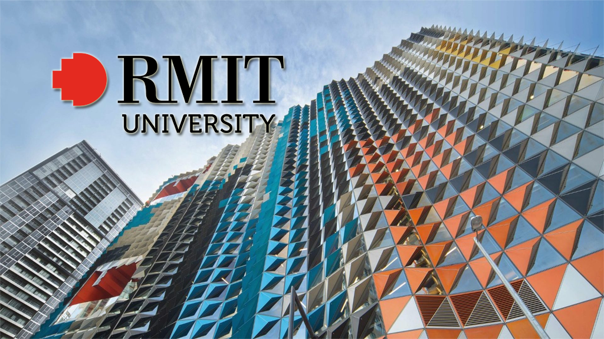

Interest in IT
What is your interest in IT? When did your interest in IT start?
I chose to study IT because ever since I started high school I really had a passion for programming and working for one of the major tech giant companies in the world such as Google, Facebook or Microsoft. While my friends wanted to work in other careers such as medicine or civil engineering, I always wanted a career where I can have the comfort of working with technology. As I believe that the future of the world is led by technology especially AI, hence I wanted to make IT my profession as there are multiple fields, I can study in IT besides programming that can provide a handsome pay as well. But my biggest interest in IT is to start my own software company and make it grow into one the tech giants that I hope to work for, because if you search on google the richest people in the world 90% of the time they are related to the profession on IT such as Bill Gates or Mark Zuckerberg. Therefore, my biggest passion is own a company but if I can’t achieve that than the next best thing is to at least work for on the above-mentioned companies.
Was there a particular event or person that sparked your interest? Outline your IT experience (if any).
Although there wasn’t a particular event or person that sparked my interest, as it was my own decision and interest, however some of my cousins kind of had an effect on me as most of them had pursued a career in IT especially my two older cousin who I lived with through my childhood and with whom I have a deep connection with. Finding out that both of them had careers in IT boosted my decision of choosing a career in IT, in fact they were ones that first showed me how to use google when I was young and that memory was imprinted in brain as it was my first experience with the internet and using a computer. But besides that it was my own experience with technology especially when I moved to Australia that made me have a passion for IT with all the new technology I was introduced to like an iPad, Macs and PC which I didn’t have access to back in my home country.
Why did you choose to come to RMIT?
Besides being one the most famous Uni’s in Melbourne, the field I want to study is in the Uni’s name. As this university is mostly dedicated towards the subjects in IT and is the best one in my state, it was an easy choice for me to pick where I wanted to continue my studies after high school. RMIT is not only a prestigious uni in Melbourne but also a lot of people have recommended it for me because of my interests. Also I have found out that it is one of the only uni’s that provides with campus interviews for jobs after finishing courses so what can be better than moving into a job straight after my studies. As far as I’m concerned RMIT is the best uni in Melbourne for engineering and technology students. Ever since I entered year 10 and had started to think about going to uni, I always wanted to study here and so far I’ve enjoyed my experience at this uni from the lecturers to the content.
What do you expect to learn during your studies?
The main thing I want to study at this university is programming, as it was my goal to achieve a job that involves coding and in this course I already have a class called intro to programming where we’re learning python and in this class we are going to be using html. But after the first semester I am looking to change this course to computer science, as if I achieve sufficient enough grades, I am able to switch to it after the semester. This was my goal from the start to study computer science, but I didn’t receive the required ATAR for that course hence I chose IT and hopefully I can change to CS after this semester and learn about programming in depth in that course. But there are also other classes besides programming in these courses that I expect to learn such as User Centred Design and Discrete Maths, which will also guide me into achieving a good job after finishing my courses and leaving uni.